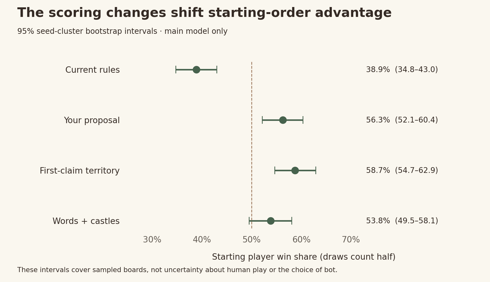

Current rules
The live control
1/2/4 letter values and the large existing length bonus. Ordinary tiles are worth 1 while held; castles 3/5 while held. Both players collect castle income 2/4 at each round boundary. Scores can fall when land is lost.
English scoring study · 18 October 2026
Your proposal is worth testing. The strongest simplification may be to score words and defended castles only. Here is what the simulations actually showed—and where they fell short.
Automated play, not measured enjoyment. Research only; the live game is unchanged.
01 / The point distribution
Both players’ final scores combined; each game has equal weight. Current territory is final ownership. New territory rewards are banked. Deductions are never counted as extra positive points.
02 / The four setups
The live control
1/2/4 letter values and the large existing length bonus. Ordinary tiles are worth 1 while held; castles 3/5 while held. Both players collect castle income 2/4 at each round boundary. Scores can fall when land is lost.
Bank captures, reward defence
Five letter tiers and your gentler bonus. Each ordinary capture banks +1, including recaptures. No deductions. Castles have no capture or final value: side +2 / centre +4 only after surviving an opponent’s turn.
Prevent repeated capture rewards
Same as your proposal, except each ordinary tile pays each player only once. Recaptures still change ownership and possible starting positions, but do not pay again. This needs a record of past claims.
The simplest variation
Same letters, bonus and defended-castle payments, but no ordinary-tile points. Scores have only two sources: words and castles that survive. Ordinary land still matters because words must start on your territory.
Letter values: 1 AEILNORSTU · 2 DG · 3 BCMP · 4 FHKVWY · 5 JQXZ. Jokers score zero. No length bonus through five letters; six earns +1, seven +3, eight +5, nine +7, then +2 per extra letter.
“No deductions” was tested as +1 banked per ordinary capture, including recaptures. Starting tiles give 3 points in that version and first-claim; words + castles starts at zero. All new castles pay 2/4 only after surviving a reply, including refresh turns. No castle capture points, no final castle bonus, no extra turn or payout after the finish.
03 / My honest assessment
The length bonus makes up 29.3% of all points, nearly as much as the letters themselves. Land can add to your score and remove from theirs, while castles add another payment. It creates tactical play, but asks players to follow too many overlapping rewards.
It also has the highest ordinary attack rate and the most reversals here. Simplifying is a trade-off, not an improvement on every measure.
The 54.5% words / 45.5% territory-and-castles split is appealing. Lower word scores can still be worthwhile for position. But ordinary recaptures generate 4.2% of all points; the map can pay repeatedly without those points ever being lost.
That is a design risk, not a demonstrated farming exploit: the balanced bot beat the short-word tempo bot in 81.3% of this matchup. Starter advantage still needs work.
It removes repeat-capture rewards, but now players need to know which tiles have paid them before. Ordinary land still contributes 19.4%. That is not enough improvement to justify another rule to explain and display.
Main-model first-player wins rise to 58.7%, and halfway leaders win 77.6%. It did not solve the fairness or comeback concerns.
Only two scoring sources. 69.4% words / 30.6% castles, yet the most castle ownership changes in the main model: 6.3 per game. Map-aware play beat the word-only bot 82.8% of the time. Strategy does not require half the points to come from land.
Ordinary attacks fall, so broad conquest may feel less rewarding. Halfway leaders win 77.4%. Under exhaustive word search, castles supply only 11.4% and the starter wins 61.3%. This is the cleanest candidate, not a proven winner.
04 / What changed in play?
Main model. “Spatial sacrifice” means giving up at least two available word points for a higher land swing or castle-income opportunity. It depends on the bot and point scale; it does not prove the move was good.
Mean length changed from 5.25 to 5.14 under your proposal. The bonus share fell from 29.3% to 6.3%. More of the word score comes from the actual letters.
Physical F/H/K/V/W/Y/J/Q/X/Z tiles rose from 6.8% to 9.5% of letters played. Joker substitutions are excluded. But J/Q/X/Z alone stayed below 0.1% everywhere—five-point letters are too rarely used here to call that part balanced.
Each cell: balanced bot’s win share in 128 games, draws half. These are fixed heuristics, not optimal players. “Tempo” favours score per letter, which tests short-word income incentives.
05 / The warning I would not ignore

The new timing removes the round-boundary payout, but payment opportunities are still unequal. A castle captured on the final reply cannot survive another turn, while an earlier-held castle can pay after that reply. Randomizing the starter spreads an advantage across games; it does not fix a single match.
I would not add compensation yet. First isolate end-of-game payout timing, then test with people. The chart’s intervals cover sampled boards under this model; they do not cover uncertainty about human behaviour.
Download fairness chart06 / Was the smaller word actually better?
I selected eight qualifying decisions per setup before seeing their outcomes, then played each chosen move and its best-word alternative through 24 paired continuations. These examples show both sides; all 32 decisions are downloadable.
7 word points instead of 10. The spatial choice improved estimated final margin by 17.2 points. The individual 95% interval was +1.8 to +31.2.
4 word points instead of 9. Estimated final margin improved by 7.3 points; interval +1.8 to +13.0.
8 word points instead of 12. Chasing position made estimated final margin 16.0 points worse; interval −25.8 to −7.1. The bot sometimes overvalues the map.
The chosen spatial move had a positive mean in 6/8 current, 5/8 proposal, 5/8 first-claim and 7/8 words + castles decisions. Only 1/8, 2/8, 3/8 and 3/8 respectively had positive individual intervals. The sample is small and most estimates are uncertain; these are not tactical success rates for all positions.
Download all decisions and continuation outcomes07 / Watch the scoring in context
The same first board seed, using each starting order. These are predetermined examples, not best-looking games.
Sage = player 1 · walnut = player 2 · outlined squares = castles · blank tiles = jokers. The path shows the last word; letters shown are before replacement for that path.
08 / Evidence and limits
All games used today’s English board, its six jokers and five castles, the 120-letter budget, and the pinned legal dictionary. The current control is checked against the live engine after every move. The main study uses 256 boards twice each, with starters swapped, and 12 sampled familiar word choices per turn.
Other stages test fewer noticed words, exhaustive familiar-word search up to 12 letters, mixed opponents, and shallow reply planning. With exhaustive search the word share rises to 79.0%, 67.4%, 70.9% and 88.6% respectively. Longer words end games in fewer rounds, reducing castle payouts. A single pie chart is not a universal balance result.
4,800 games, 115,790 turns, zero truncated searches. Ten research tests passed; all 2,048 main games were replayed exactly in a separate accounting and letter-use audit. The 1,536 decision continuations are additional and counted separately.
These bots do not measure fun, frustration or what people naturally notice. The changes are bundled, so this does not isolate the effect of each individual rule. Intervals are exploratory; no multiple-comparison correction. No live user data was used. No new costs or APK build.
Browser preview was unavailable in this session. The report’s data, controls and CSS were checked, and the exported charts inspected; physical-phone rendering remains unverified.
Vocabulary familiarity proxy: wordfreq 3.1.1, Robyn Speer / Elia Robyn Lake. Code Apache-2.0; data includes CC BY-SA 4.0 material and additional notices. Full cache not redistributed. Legal words use the project’s pinned Letterpress-derived list.